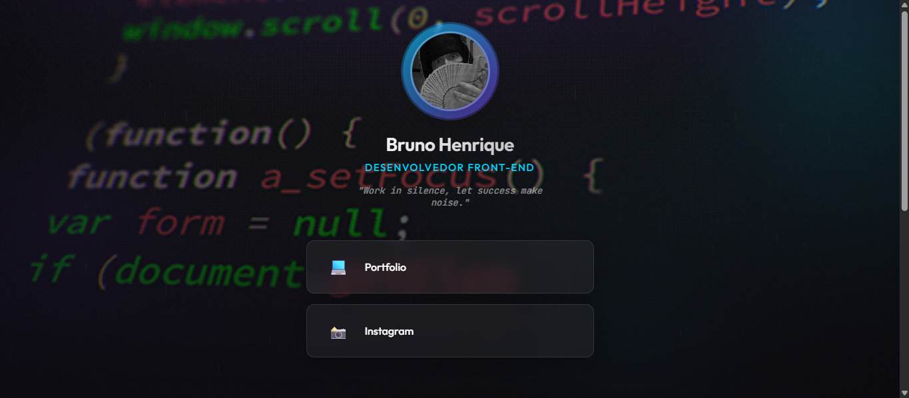
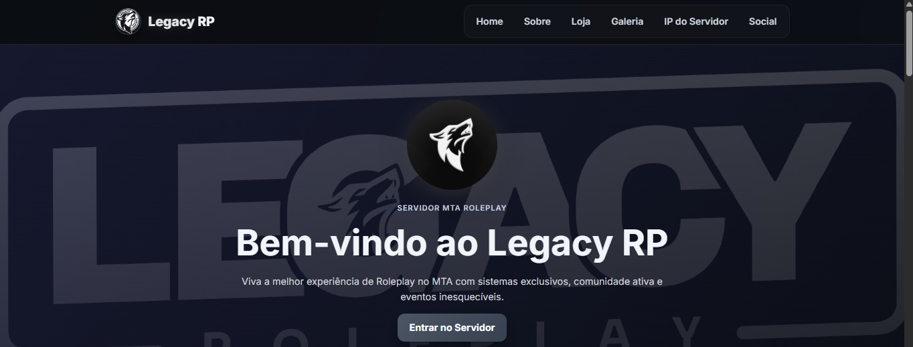
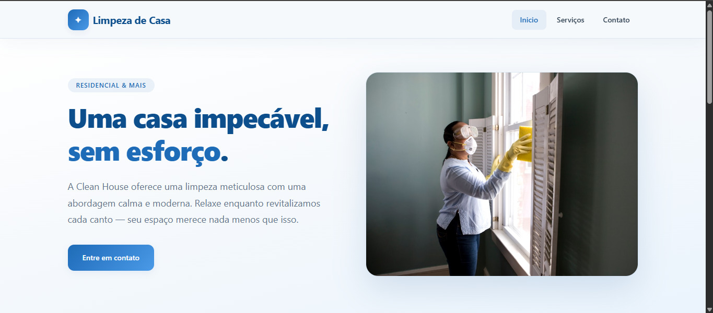
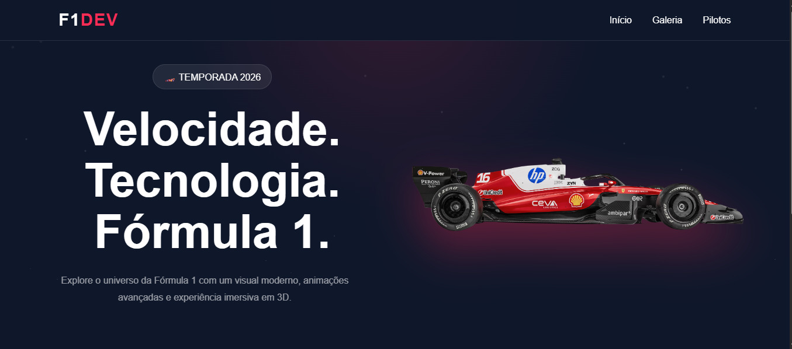
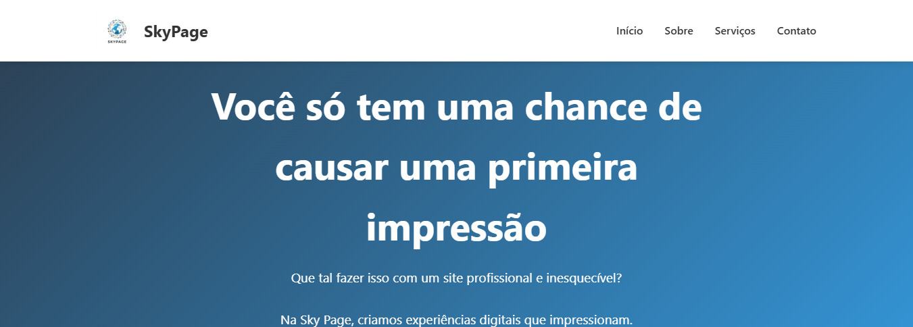
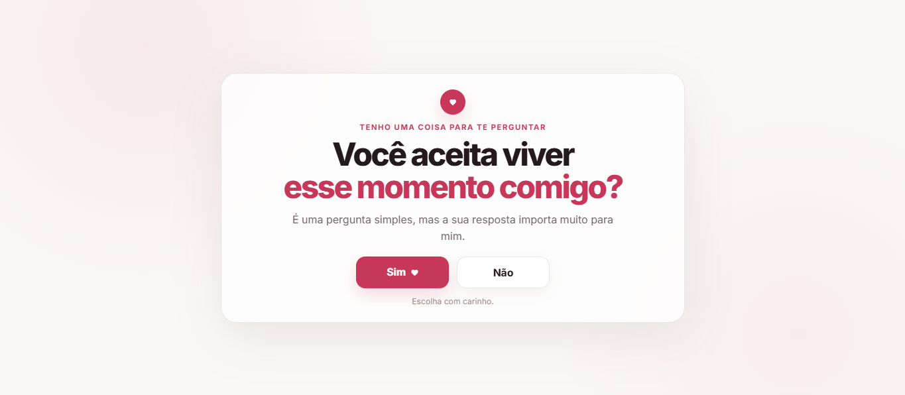

01
Portfólio
01
Portfólio
Portfólio pessoal
Portfólio multipágina desenvolvido com foco em navegação fluida, responsividade, transições entre páginas e apresentação dos meus projetos.
HTMLCSSJavaScript
Projetos & experiências
Uma seleção de projetos que desenvolvi durante minha jornada na tecnologia, explorando desenvolvimento web, interfaces responsivas e automações.
// PORTFÓLIO
Conheça alguns dos trabalhos, experimentos e sistemas que desenvolvi.
01
Portfólio
Portfólio multipágina desenvolvido com foco em navegação fluida, responsividade, transições entre páginas e apresentação dos meus projetos.
 02
Plataforma web
02
Plataforma web
Plataforma para organizar rifas em um servidor MTA. Inclui gerenciamento de rifas, números disponíveis, compras, participantes e resultados, com foco em automação e organização.
 03
Bot para Discord
03
Bot para Discord
Bot para gerenciamento de rifas no Discord, com criação de rifas, compras, reservas, cupons, aprovação de pagamentos, logs, auditoria e divulgação automática de resultados.

04 Redes sociaisPágina para centralizar redes sociais e portfólio, com interface moderna, navegação simples e foco na usabilidade.

05 GamesLanding page para uma comunidade de MTA, com interface responsiva e apresentação de funcionalidades e scripts do servidor.

06 ServiçosLanding page para uma empresa de limpeza, com design responsivo, conteúdo organizado e funcionalidades interativas.

07 AutomobilismoLanding page para um campeonato de Fórmula 1, com foco em apresentação visual, responsividade e funcionalidades interativas.

08 Site corporativoSite corporativo com estrutura responsiva, organização visual, usabilidade e atenção ao desempenho em diferentes dispositivos.

09 Experiência interativaExperiência web personalizada com navegação entre telas, animações, imagens e player de música, criada para apresentar momentos especiais.
// PRÓXIMO PASSO
Estou sempre aprendendo, desenvolvendo novas ideias e aprimorando minhas habilidades.